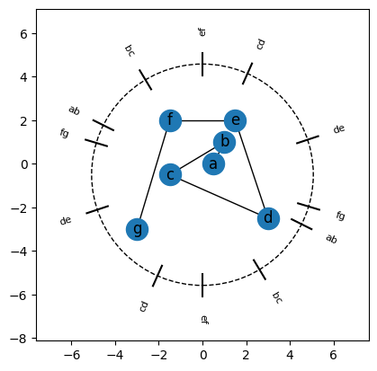
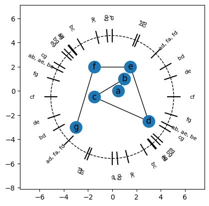
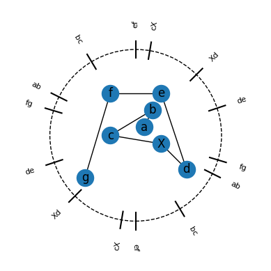
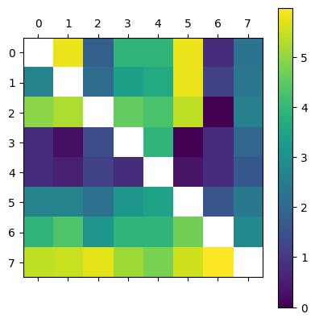

[1]:
from ect import ECT, EmbeddedGraph, EmbeddedCW,create_example_graph
import matplotlib.pyplot as plt
from matplotlib.patches import Circle
import numpy as np
import networkx as nx
import pandas as pd
[2]:
# Recreating the sprial example from Arya
# Create the graph
Spiral = EmbeddedGraph()
Spiral.add_node('a', .5, 0)
Spiral.add_node('b', 1, 1)
Spiral.add_node('c', -1.5, -.5)
Spiral.add_node('d', 3, -2.5)
Spiral.add_node('e',1.5,2)
Spiral.add_node('f',-1.5,2)
Spiral.add_node('g', -3,-3)
nodelist = list(Spiral.nodes())
nodelist.sort()
for i in range(len(nodelist)-1):
Spiral.add_edge(nodelist[i], nodelist[i+1])
Spiral.plot(angle_labels_circle=True, edges_only=True)
[2]:
<Axes: >

[3]:
Spiral.plot(angle_labels_circle=True, edges_only=False)
[3]:
<Axes: >

[4]:
All_Angles = Spiral.get_all_angles('dict', num_rounding_digits=2, opposites = True)
keys = list(All_Angles.keys())
keys.sort()
pd_table = pd.DataFrame(columns = ['Angle', 'Swapped Verts', 'Sorted list'])
pd_table['Angle'] = keys
pd_table['Swapped Verts'] = [All_Angles[key] for key in keys]
pd_table.sort_values(by='Angle', inplace=True)
pd_table['Sorted list'] = [''.join(Spiral.sort_vertices(key)) for key in keys]
pd_table.head(100)
[4]:
| Angle | Swapped Verts | Sorted list | |
|---|---|---|---|
| 0 | 0.00 | [(c, f)] | gcfabed |
| 1 | 0.32 | [(d, e)] | gcfabed |
| 2 | 0.52 | [(b, d)] | gcfadbe |
| 3 | 0.79 | [(a, d), (f, a), (f, d)] | gcdafbe |
| 4 | 1.15 | [(c, d)] | gcdafbe |
| 5 | 1.19 | [(b, f)] | gdcafbe |
| 6 | 1.57 | [(e, f)] | gdcabfe |
| 7 | 1.65 | [(d, g)] | gdcabef |
| 8 | 1.82 | [(a, c)] | dgacbef |
| 9 | 2.11 | [(b, c)] | dgacbef |
| 10 | 2.27 | [(c, e)] | dgabecf |
| 11 | 2.28 | [(a, g)] | dagbecf |
| 12 | 2.36 | [(b, g)] | dabgecf |
| 13 | 2.41 | [(e, g)] | dabegcf |
| 14 | 2.60 | [(c, g)] | dabegcf |
| 15 | 2.68 | [(a, b), (a, e), (b, e)] | debacgf |
| 16 | 2.85 | [(f, g)] | debacgf |
| 17 | 3.14 | [(c, f)] | debacfg |
| 18 | 3.46 | [(d, e)] | debafcg |
| 19 | 3.66 | [(b, d)] | edbafcg |
| 20 | 3.93 | [(a, d), (f, a), (f, d)] | ebfadcg |
| 21 | 4.29 | [(c, d)] | ebfadcg |
| 22 | 4.33 | [(b, f)] | ebfacdg |
| 23 | 4.71 | [(e, f)] | efbacdg |
| 24 | 4.79 | [(d, g)] | febacdg |
| 25 | 4.96 | [(a, c)] | febcagd |
| 26 | 5.25 | [(b, c)] | febcagd |
| 27 | 5.41 | [(c, e)] | fcebagd |
| 28 | 5.42 | [(a, g)] | fcebagd |
| 29 | 5.50 | [(b, g)] | fcegbad |
| 30 | 5.55 | [(e, g)] | fcegbad |
| 31 | 5.74 | [(c, g)] | fcgebad |
| 32 | 5.82 | [(a, b), (a, e), (b, e)] | fgcabed |
| 33 | 5.99 | [(f, g)] | fgcabed |
[5]:
All_Angles.keys()
[5]:
dict_keys([5.82, 1.82, 3.93, 2.28, 2.11, 3.66, 1.19, 2.36, 4.29, 5.41, 0.0, 2.6, 0.32, 1.65, 1.57, 2.41, 2.85, 2.68, 4.96, 0.79, 5.42, 5.25, 0.52, 4.33, 5.5, 1.15, 2.27, 3.14, 5.74, 3.46, 4.79, 4.71, 5.55, 5.99])
[ ]:
[ ]:
[ ]:
[5]:
All_Angles = Spiral.get_all_angles('dict', num_rounding_digits=2)
# add pi + angle for all angles
All_Angles_2pi = {}
for key in All_Angles.keys():
All_Angles_2pi[round(key,2)] = All_Angles[key]
other_key = (key + np.pi) % 2*np.pi
other_key = round(other_key, 2)
All_Angles_2pi[other_key] = All_Angles[key]
keys = list(All_Angles_2pi.keys())
keys.sort()
pd_table = pd.DataFrame(columns=['angle', 'vertex_pair(s)_swapped', 'sorted_order_at_next_midpoint'])
pd_table['angle'] = keys
pd_table['vertex_pair(s)_swapped'] = [All_Angles_2pi[key] for key in keys]
# sort the vertex pairs at the midpoint
for i in range(len(keys)-1):
angle = np.average([keys[i], keys[i+1]])
sorted_order = Spiral.sort_vertices(angle)
pd_table.at[i, 'sorted_order_at_next_midpoint'] = sorted_order
angle = np.average([keys[-1], keys[0]+2*np.pi])
sorted_order = Spiral.sort_vertices(angle)
pd_table.at[len(keys)-1, 'sorted_order_at_next_midpoint'] = sorted_order
pd_table
[5]:
| angle | vertex_pair(s)_swapped | sorted_order_at_next_midpoint | |
|---|---|---|---|
| 0 | 0.00 | [(c, f)] | [g, c, f, a, b, e, d] |
| 1 | 0.32 | [(d, e)] | [g, c, f, a, d, b, e] |
| 2 | 1.04 | [(b, f)] | [g, c, d, a, f, b, e] |
| 3 | 1.19 | [(b, f)] | [g, d, c, a, b, f, e] |
| 4 | 1.57 | [(e, f)] | [g, d, c, a, b, e, f] |
| 5 | 1.65 | [(d, g)] | [d, g, c, a, b, e, f] |
| 6 | 1.73 | [(c, e)] | [d, g, c, a, b, e, f] |
| 7 | 1.82 | [(a, c)] | [d, g, a, c, b, e, f] |
| 8 | 2.11 | [(b, c)] | [d, g, a, b, c, e, f] |
| 9 | 2.24 | [(e, f)] | [d, g, a, b, c, e, f] |
| 10 | 2.28 | [(a, g)] | [d, a, g, b, e, c, f] |
| 11 | 2.36 | [(b, g)] | [d, a, b, g, e, c, f] |
| 12 | 2.41 | [(e, g)] | [d, a, b, e, g, c, f] |
| 13 | 2.49 | [(d, g)] | [d, a, b, e, g, c, f] |
| 14 | 2.52 | [(b, d)] | [d, a, b, e, g, c, f] |
| 15 | 2.60 | [(c, g)] | [d, e, b, a, c, g, f] |
| 16 | 2.85 | [(f, g)] | [d, e, b, a, c, f, g] |
| 17 | 3.02 | [(a, c)] | [d, e, b, a, f, c, g] |
| 18 | 3.37 | [(a, d), (f, a), (f, d)] | [e, d, b, a, f, c, g] |
| 19 | 3.59 | [(c, f)] | [e, d, b, a, f, c, g] |
| 20 | 3.66 | [(b, d)] | [e, b, d, a, f, c, g] |
| 21 | 3.93 | [(b, c)] | [e, b, f, a, d, c, g] |
| 22 | 4.29 | [(c, d)] | [e, f, b, a, c, d, g] |
| 23 | 4.47 | [(a, g)] | [e, f, b, a, c, d, g] |
| 24 | 4.50 | [(c, d)] | [e, f, b, a, c, d, g] |
| 25 | 4.59 | [(d, e)] | [e, f, b, a, c, d, g] |
| 26 | 4.72 | [(b, g)] | [f, e, b, a, c, d, g] |
| 27 | 4.87 | [(e, g)] | [f, e, b, c, a, g, d] |
| 28 | 5.41 | [(c, e)] | [f, c, e, b, g, a, d] |
| 29 | 5.47 | [(c, g)] | [f, c, g, e, b, a, d] |
| 30 | 5.82 | [(a, b), (a, e), (b, e)] | [g, f, c, a, b, e, d] |
| 31 | 6.26 | [(f, g)] | [g, f, c, a, b, e, d] |
[6]:
nodelist
[6]:
['a', 'b', 'c', 'd', 'e', 'f', 'g']
[7]:
# Modified version with vertex added between C and D
# Create the graph
G = EmbeddedGraph()
G.add_node('a', .5, 0)
G.add_node('b', 1, 1)
G.add_node('c', -1.5, -.5)
G.add_node('X', 1.5, -1)
G.add_node('d', 3, -2.5)
G.add_node('e',1.5,2)
G.add_node('f',-1.5,2)
G.add_node('g', -3,-3)
nodelist = ['a', 'b', 'c','X', 'd', 'e', 'f', 'g']
for i in range(len(nodelist)-1):
G.add_edge(nodelist[i], nodelist[i+1])
fig, ax = plt.subplots()
G.plot(angle_labels_circle=True, edges_only=True, ax = ax)
# remove axes
ax.set_axis_off()

[8]:
plt.matshow(G.get_all_angles()[0])
plt.colorbar()
[8]:
<matplotlib.colorbar.Colorbar at 0x3186a63d0>

[9]:
All_Angles = G.get_all_angles('dict', num_rounding_digits=2)
# add pi + angle for all angles
All_Angles_2pi = {}
for key in All_Angles.keys():
All_Angles_2pi[round(key,2)] = All_Angles[key]
other_key = (key + np.pi) % 2*np.pi
other_key = round(other_key, 2)
All_Angles_2pi[other_key] = All_Angles[key]
keys = list(All_Angles_2pi.keys())
keys.sort()
keys[:10]
[9]:
[0.0, 0.32, 1.04, 1.19, 1.57, 1.65, 1.67, 1.73, 1.82, 1.99]
[10]:
pd_table = pd.DataFrame(columns=['angle', 'vertex_pair(s)_swapped', 'sorted_order_at_next_midpoint'])
pd_table['angle'] = keys
pd_table['vertex_pair(s)'] = [All_Angles_2pi[key] for key in keys]
# sort the vertex pairs at the midpoint
for i in range(len(keys)-1):
angle = np.average([keys[i], keys[i+1]])
sorted_order = G.sort_vertices(angle)
pd_table.at[i, 'sorted_order_at_next_midpoint'] = sorted_order
angle = np.average([keys[-1], keys[0]+2*np.pi])
sorted_order = G.sort_vertices(angle)
pd_table.at[len(keys)-1, 'sorted_order_at_next_midpoint'] = sorted_order
pd_table
[10]:
| angle | vertex_pair(s)_swapped | sorted_order_at_next_midpoint | vertex_pair(s) | |
|---|---|---|---|---|
| 0 | 0.00 | NaN | [g, c, f, a, b, X, e, d] | [(c, f), (X, e)] |
| 1 | 0.32 | NaN | [g, c, f, a, X, d, b, e] | [(d, e)] |
| 2 | 1.04 | NaN | [g, c, d, X, a, f, b, e] | [(b, f)] |
| 3 | 1.19 | NaN | [g, d, c, X, a, b, f, e] | [(b, f)] |
| 4 | 1.57 | NaN | [g, d, X, c, a, b, e, f] | [(e, f)] |
| 5 | 1.65 | NaN | [d, g, X, c, a, b, e, f] | [(d, g)] |
| 6 | 1.67 | NaN | [d, g, X, c, a, b, e, f] | [(b, X)] |
| 7 | 1.73 | NaN | [d, g, X, c, a, b, e, f] | [(c, e)] |
| 8 | 1.82 | NaN | [d, g, X, a, c, b, e, f] | [(a, c)] |
| 9 | 1.99 | NaN | [d, X, g, a, c, b, e, f] | [(X, g)] |
| 10 | 2.11 | NaN | [d, X, g, a, b, c, e, f] | [(b, c)] |
| 11 | 2.24 | NaN | [d, X, g, a, b, c, e, f] | [(e, f)] |
| 12 | 2.28 | NaN | [d, X, a, g, b, e, c, f] | [(a, g)] |
| 13 | 2.36 | NaN | [d, X, a, b, g, e, c, f] | [(b, g)] |
| 14 | 2.41 | NaN | [d, X, a, b, e, g, c, f] | [(e, g)] |
| 15 | 2.49 | NaN | [d, X, a, b, e, g, c, f] | [(d, g)] |
| 16 | 2.52 | NaN | [d, X, a, b, e, g, c, f] | [(b, d)] |
| 17 | 2.60 | NaN | [d, X, e, b, a, c, g, f] | [(c, g)] |
| 18 | 2.85 | NaN | [d, X, e, b, a, c, f, g] | [(f, g)] |
| 19 | 3.02 | NaN | [d, e, X, b, a, f, c, g] | [(a, c)] |
| 20 | 3.37 | NaN | [d, e, X, b, a, f, c, g] | [(a, X), (a, d), (f, a), (X, d), (f, X), (f, d)] |
| 21 | 3.39 | NaN | [e, d, b, X, a, f, c, g] | [(b, X)] |
| 22 | 3.56 | NaN | [e, d, b, X, a, f, c, g] | [(X, g)] |
| 23 | 3.59 | NaN | [e, d, b, X, a, f, c, g] | [(c, f), (X, e)] |
| 24 | 3.66 | NaN | [e, b, d, X, a, f, c, g] | [(b, d)] |
| 25 | 3.93 | NaN | [e, b, f, a, X, d, c, g] | [(b, c)] |
| 26 | 4.29 | NaN | [e, f, b, a, X, c, d, g] | [(c, d)] |
| 27 | 4.47 | NaN | [e, f, b, a, X, c, d, g] | [(a, g)] |
| 28 | 4.50 | NaN | [e, f, b, a, X, c, d, g] | [(c, d)] |
| 29 | 4.55 | NaN | [e, f, b, a, c, X, d, g] | [(c, X)] |
| 30 | 4.59 | NaN | [e, f, b, a, c, X, d, g] | [(d, e)] |
| 31 | 4.72 | NaN | [f, e, b, a, c, X, d, g] | [(b, g)] |
| 32 | 4.87 | NaN | [f, e, b, c, a, X, g, d] | [(e, g)] |
| 33 | 5.31 | NaN | [f, e, c, b, a, g, X, d] | [(c, X)] |
| 34 | 5.41 | NaN | [f, c, e, b, g, a, X, d] | [(c, e)] |
| 35 | 5.47 | NaN | [f, c, g, e, b, a, X, d] | [(c, g)] |
| 36 | 5.82 | NaN | [g, f, c, a, b, e, X, d] | [(a, b), (a, e), (b, e)] |
| 37 | 6.26 | NaN | [g, f, c, a, b, e, X, d] | [(f, g)] |
[11]:
start_angle = np.average(keys[0:2])
start_angle
[11]:
0.16
[12]:
G.sort_vertices(start_angle)
[12]:
['g', 'c', 'f', 'a', 'b', 'X', 'e', 'd']
[13]:
# angle mod 2pi
for theta in All_Angles:
print(f'{theta} : {theta % (2*np.pi)}')
5.82 : 5.82
1.82 : 1.82
3.93 : 3.93
2.28 : 2.28
2.11 : 2.11
3.39 : 3.39
3.66 : 3.66
1.19 : 1.19
2.36 : 2.36
4.55 : 4.55
4.29 : 4.29
5.41 : 5.41
0.0 : 0.0
2.6 : 2.6
1.99 : 1.99
0.32 : 0.32
1.65 : 1.65
1.57 : 1.57
2.41 : 2.41
2.85 : 2.85
[28]:
M = G.get_all_angles()[0]
np.nanmin(M)
np.nanmax(M)
[28]:
5.9917285127017195
[ ]: